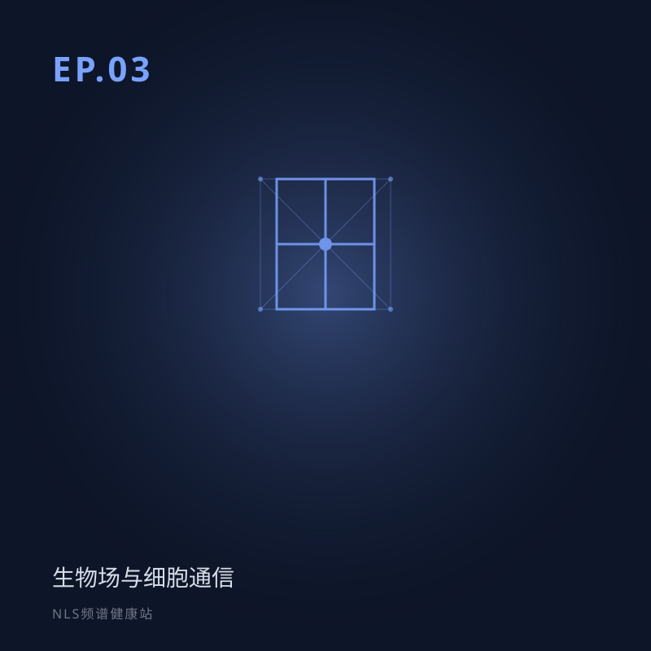

EP.03 生物场与细胞通信：你的身体里有一个看不见的通信网络
所属专题：认知基础：NLS 是什么
你的身体里有一个看不见的通信网络——每一个细胞都像微型电台，用特定频率发送和接收信息。本期带你探索生物场世界，了解细胞如何「说话」，以及为什么这套理论和中医的「气」不谋而合。
生物场与细胞通信：身体里看不见的通信网络。细胞如何用频率「说话」，健康与病变频率有何不同，生物场为何常被拿来与「气」、经络对照。适合想理解 NLS 底层假设的听众。关键词：生物场、细胞通信、频率、经络。
分段要点
-
00:00开场 回顾前两期，引出身体内部通信。
-
03:00除了神经和血管，还有别的通信吗？ 城市比喻：公路、电话线与 WiFi。
-
06:00什么是生物场？ 定义、组成，以及心电场、脑电波等证据。
-
14:00细胞如何用频率通信 低频振荡与扭转场的作用。
-
24:00与中医的奇妙呼应 生物场对应「气」，能量通道对应经络。
#生物场#细胞通信#频率#中医气#经络
本集内容仅供科普参考，不构成医疗建议。健康决策请咨询专业医生。